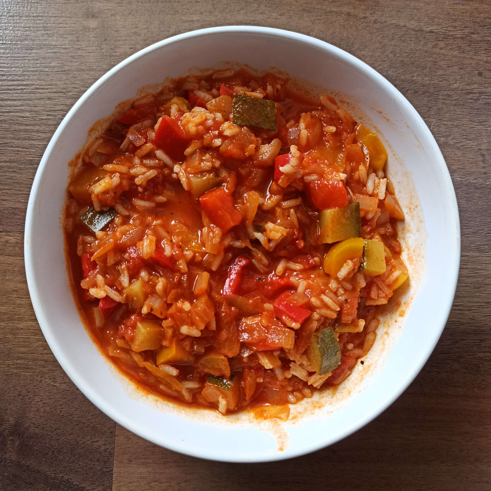

spaghettitortillaspgahetti tonnokasza z sosem mięsnymklopsy, ziemniaki i mizeria/tsatsykikaszottonaleśnikichilli con carnepuree, jajko i kalafior???kluski na parzejajko, fasola i kalafiorowe klopsyrosółgołąbkipulpety z sosem, ziemniaki i ogórki kiszonecarbonaramakaron z łososiem i brokułemfasolka, ziemniakami i filet

leczołosoś, tabbouleh(libańska sałatka)potrawka warzywnaracuchymakaron z papryką, kiełbasą i jajkiemzapiekanka z kaszykluski serowecolesław, ziemniaki i indyk